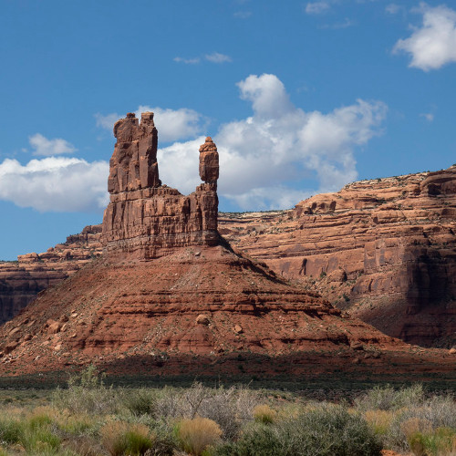

Bear Ears National Monument
New Federal deregulation threatens parks like Bear Ears National Monument.
In February 2017, Utah Governor Herbert signed a resolution passed by the Utah State Legislature asking President Donald Trump to rescind the designation of Bears Ears as a national monument. There is uncertainty about the authority for a president to completely rescind a monument designated under the Antiquities Act, as it has never been done before.